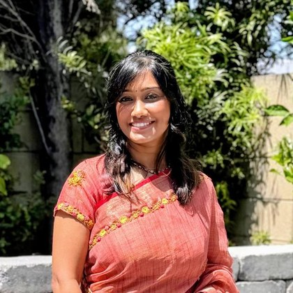
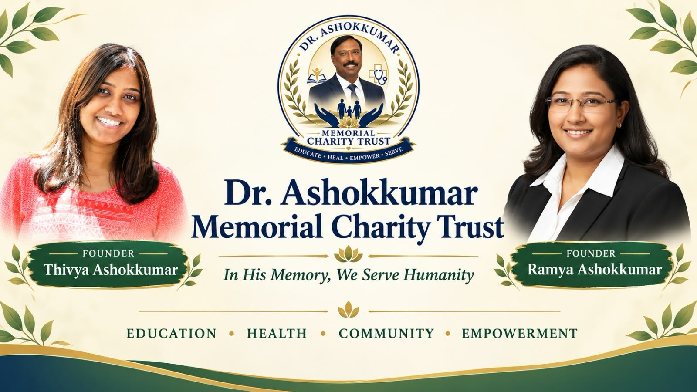

Dr. Ashokkumar Memorial Charity Trust works to strengthen communities through education, healthcare, food support, women’s empowerment and compassionate assistance for people in need.
Based in the Salem region, Tamil Nadu • Educate • Heal • Empower • Serve
Who we are
Educate • Heal • Empower • Serve
Dr. Ashokkumar Memorial Charity Trust is a registered charitable trust working to support individuals and families through practical, community-centred initiatives.
Our approach is simple: listen to community needs, work with responsible local partners, and deliver support with respect, transparency and care. We aim to create opportunities that help people move towards healthier, safer and more secure lives.
Educate
Heal
Empower
Serve
What we do
Our areas of service
We focus on essential needs and practical support. Our activities are shaped by community needs, available resources and trusted partnerships.
📚
Education support
Helping students from families facing financial hardship continue their education through fee assistance, learning materials and other support. This includes support for girls and young women with school and tuition fees, helping them continue learning and pursue their aspirations.
🩺
Health and medical support
Supporting community health initiatives, including eye-care camps and access to basic health information and appropriate medical services through partners.
🍚
Food and family welfare
Providing food assistance and essential support to families and individuals experiencing hardship.
🌷
Women’s empowerment
Encouraging women’s wellbeing, confidence and access to opportunities through community activities and potential skills partnerships.
🤝
Community care
Recognising and supporting people who serve our communities, including appreciation and welfare activities for local corporation workers.
💛
Support for people in need
Responding to identified needs with compassion, whether through education, medical assistance, food support or other appropriate help.
Our leadership
Trustee Details
The Trust is guided by people who believe that meaningful change begins with care, responsibility and action.
Er.Ramya Ashokkumar
President and Treasurer
Co-Founder

Er.Thivya Ashokkumar
Vice President
Co-Founder
Dr.Monisha Ramesh
Secretary
Mrs.Savithiri Ashokkumar
Joint Secretary
Er.Snegha Nagaraj
Deputy Secretary

News and activities
Events and recent initiatives
From health camps to classroom talks and festival thank-yous, here is what your support has made possible in recent months.
19Jul 2026
Free General Health and Eye Check-up Camp
Kulalar Community Hall, Dadagapatti, Salem • 10:00 am – 2:00 pm
On a Sunday morning, the community hall in Dadagapatti became a neighbourhood clinic. Families walked in without an appointment and without a bill, and left with a health check-up, a proper eye examination and clear advice on what to do next.
The camp was part of Project See Better, a myopia awareness initiative, and was held with Paavai Hospital (Eye and Skin Care) and RPS Hospitals. Participants who needed treatment also received special concessions on spectacles and cataract surgery, so that care did not stop at the check-up.
Free for everyoneProject See BetterPaavai HospitalRPS Hospitals
A personal invitation to inaugurate our first medical camp.
Our first grand launch
A personal invitation to the Hon’ble Transport Minister
To mark the grand launch of our first medical camp, we met Hon’ble Transport Minister A. Vijay Tamilan Parthiban in person and invited him to inaugurate the camp.
This visit was a special moment for our Trust as we prepared to bring free healthcare services to the community.
News channels and newspapers covered our first medical camp, sharing moments from the event and the healthcare services offered to the community. We thank the media for helping spread awareness of this initiative.
Tap any image to enlarge it, or open the original to zoom in and read the report.
Project See Better: an eye-health talk for students
St. Joseph’s Matriculation Higher Secondary School, Salem
Good eyesight is easy to take for granted until it starts to fade. At St. Joseph’s, we took the Project See Better message straight into the school hall, speaking to students about myopia (short-sightedness) and why it matters for children growing up today.
Awareness is the first step to prevention. When a child understands how to look after their eyes, the whole family benefits. The visit closed with a token of thanks to the school for welcoming us.
EducationEye healthAwareness talk
25Oct 2026
Another milestone: our second medical camp
The Trust conducted another medical camp on 25 October 2026, marking a further step in our community health initiatives.
7Nov 2026
Diwali gifts for our sanitation workers
Salem • A festival thank-you
Before the lamps were lit, we paused to say thank you to the people who keep our streets clean every single day, often before the rest of us wake up.
Sanitation workers received new clothes and Diwali sweets from the Trust, a small gesture of respect so that those who work to make every festival possible can celebrate with something new of their own.
We believe in responsible service: understanding a need, planning a useful response, and sharing outcomes clearly with our supporters.
EducationHelping students stay in learning and pursue their potential.
HealthConnecting communities with awareness, screening and care.
CommunitySupporting families and recognising the people who serve others.
Be part of the change
Partner with us. Volunteer. Make an impact.
Whether you are an individual, a local business, a healthcare professional, an educational institution or a corporate organisation, you can help strengthen our community initiatives.
We welcome conversations about project sponsorship, in-kind contributions, volunteering, professional support and community partnerships.
Connect with the Trust
Please contact us to discuss a project, volunteer opportunity or partnership.
No online donations are collected through this page.
Join our mission
Become a Volunteer
Be the reason someone smiles. Make a difference
with us. Your time, skills and compassion can help
us create a stronger and more caring community.
Volunteer Registration Form
Register your interest in supporting our
healthcare, education, women empowerment and
community welfare initiatives. Our Trust team
will contact you regarding suitable opportunities.